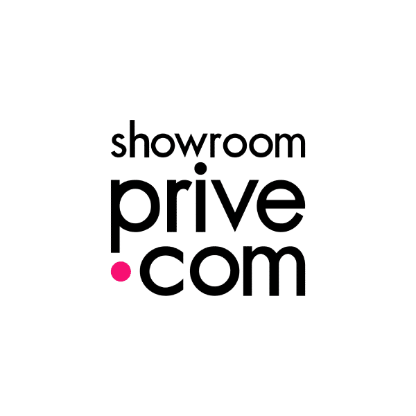
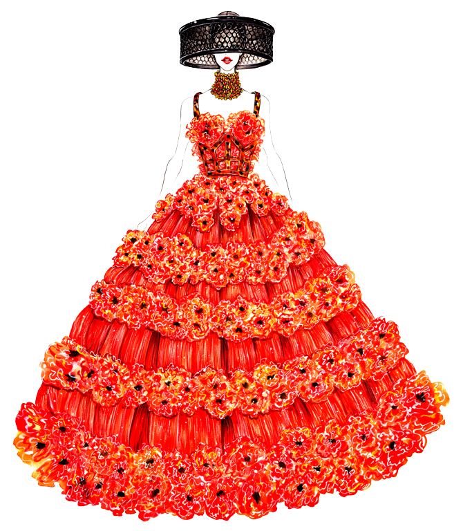

Je suis actuellement Assistante projets Marketing et Community Management Marque Propre IRL chez Showroomprive.com.
Mes missions sont diverses et variées ! J'ai enormément de chance d'avoir la possiblité de faire des missions qui me passionnenent et me
permettent de m'épanouir.
Le plus : J'évolue dans un univers, l'e-commerce qui repond à de nombreux besoins et aussi problématiques !

Je suis passionné(e) par la mode depuis mon plus jeune âge. J'adore suivre les dernières tendances et chercher de nouveaux styles à adopter.
Mais ce qui m'excite le plus, c'est de trouver des pièces uniques et originales dans des friperies ou sur des sites vintage.
Le vintage a une place particulière dans mon cœur car il apporte une d'authenticité à chaque tenue.
J'adore l'idée de porter des vêtements qui ont une histoire, qui ont été aimés et portés par d'autres avant moi.
Je suis également fasciné(e) par l'e-commerce et la façon dont il a transformé le monde de la mode. Les possibilités infinies offertes par la vente en ligne sont tellement inspirantes !
En somme, ma passion pour la mode, le vintage et l'e-commerce se nourrit mutuellement.
Pour moi, la mode est bien plus qu'un simple vêtement, c'est un moyen d'expression et de créativité.

L'avenir est imprévisible et dépend de nombreux facteurs tels que mes actions, les circonstances et les événements externes. Cependant, je peux vous assurer que vous pouvez influencer votre avenir en prenant des décisions réfléchies et en travaillant dur pour atteindre vos objectifs. Et c'est bien ce que je compte faire !